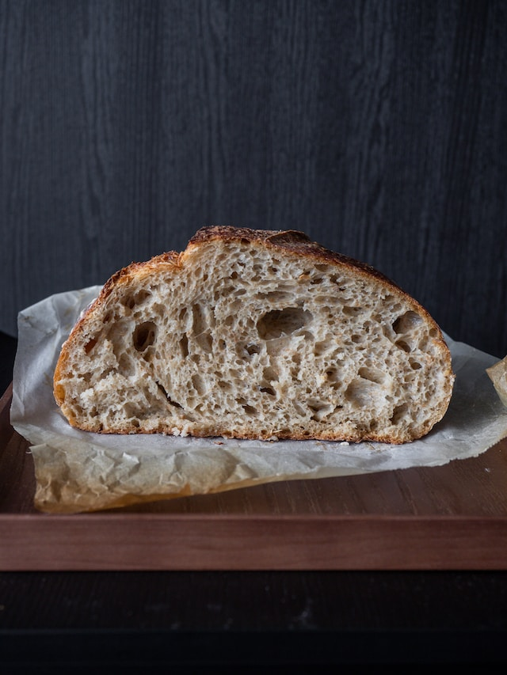

Sourdough

Description
Easy, beginner-friendly sourdough bread recipe that looks and tastes great.
Ingredients
- 50 g sourdough starter
- 500 g flour (some combination of white and wheat)
- 350 g water
- 10 g salt
Steps
- Mix the sourdough starter, flour, water, and flour together in a bowl.
- Cover the bowl and let sit for 1 hour.
- Stretch and fold the dough over itself. Rotate the dough a quarter turn at a time and repeat until the dough
forms into a tight ball.
- Cover the bowl and let sit for 30 minutes, then repeat step 3.
- Cover the bowl and let sit for 5-8 hours until the dough has risen roughly by 50%.
- Shape the dough into a tight ball on a lightly floured surface. Place the dough seam-side down into a lighly
floured
dutch oven and let sit for another 1-2 hours.
- Score the top of the dough and place the covered dutch oven into a preheated oven at 450 degrees F.
- Bake for 20 minutes, then remove the dutch oven cover.
- Bake for another 30 minutes or until the crust is a golden brown.
- Cool the bread for at least 1 hour until slicing.
Home